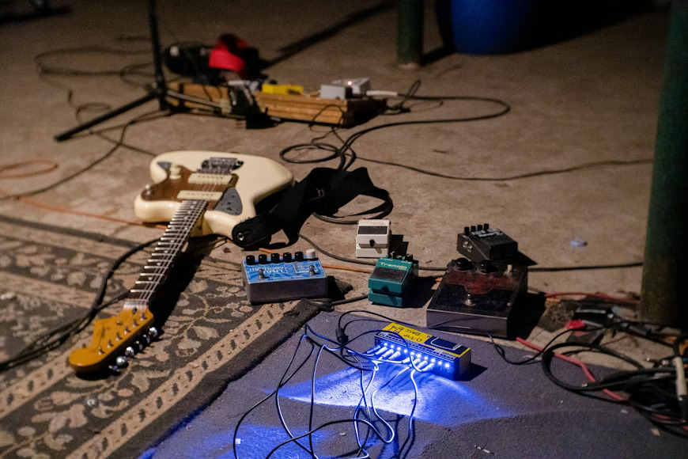

Welcome to my course website where we will explore Midwest Emo as a genre.

To understand what Midwest Emo is, it is important to first understand how it came to be. Emo music in general has had many differing sounds and phases throughout the several decades it has been around for. Many consider that the genre began in the 1980's in Washington D.C. as a subgenre of another style of music, post-hardcore. The first mention of the term "Emo", came from a Thrasher magazine where this new style of music was branded as "emo-core" (Emotional Hardcore). Bands like Rites of Spring, Embrace, and Beefeater are seen as the pioneers of this genre, despite them refuting and disliking this label. The Washington D.C. emo scene only lasted a couple of years with many bands breaking up after a single release, but its influence was widespread and set the foundation for the next iterations of emo.
Midwest Emo is a subgenre that originated during the 1990's often categorized as "second-wave emo" or "post-emo indie rock." Emerging from the Midwestern United States, it was inspired by early forms of emocore music with a higher focus on melodic riffs with emotional/introspective lyricism. It began to move away from its punk roots and instead took more inspiration from indie rock as well as math rock. This new sound helped form infamous bands in the genre like Braid, Cap'n Jazz, The Promise Ring, and American Football. While not reaching mainstream status yet, these bands rose in popularity propelling the Midwest emo sound across the U.S.. Some people also credit grunge rock band, Nirvana in playing a part in the rise and spread of subgenres of rock as more and more people began to get curious about different sounds and bands. Many bands during this era experimented with their sound adding components of pop-punk, jazz, slowcore, and pop. It should also be noted that the stereotype of emo music being overly-sensitive likely arose during this time period.
Some defining characteristics include:
Although its origins come from the 90's in the Midwest regions of America, Midwest emo as a genre has transcended into a general sound and style rather than a geographic description. To this day, it is a concept many people online debate about with differing opinions on what can and can't be considered part of the genre.
Here's a brief table displaying Midwest Emo bands from the 1990's and 2010's, after the revival.
| 1990's Midwest Emo | 2010's Midwest Emo Revival |
|---|---|
| American Football | Algernon Cadwallader |
| Cap'n Jazz | Tigers Jaw |
| Braid | Modern Baseball |